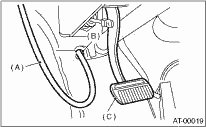
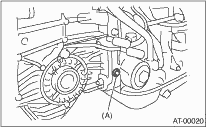

AUTOMATIC TRANSMISSION(4AT) > Line Pressure Test
NOTE:
If the clutch or brake shows a signs of slipping or shift feel is not correct, check the line pressure.
• Excessive shock during up-shift or if shifting takes place at a higher point than for normal conditions, this may be due to the line pressure being too high.
• Slippage or inability to operate the vehicle may, in most cases, be due to insufficient oil pressure for the operation of clutch, brake or control valve.
1. Line pressure measurement (under no load):
(1) Before measuring line pressure, jack-up all the wheels.
(2) Maintain the ATF temperature at approx. 70 — 80°C (158 — 176°F) during measurement.
(ATF will reach the temperature above after idling the engine for approx. 30 minutes with the select lever in “N” or “P”.)
2. Line pressure measurement (under heavy load):
(1) Before measuring line pressure, apply both the foot and parking brakes with all wheels chocked (Same as for “stall” test conditions).
(2) Measure the line pressure when the select lever is in “R” and “2” (hold switch ON) and with the engine under a stall condition.
(3) Measure the line pressure within 5 seconds after shifting the select lever to each position. (If the line pressure needs to be measured again, allow the engine to idle and cool it down for more than 1 minute.)
(4) Maintain the ATF temperature at approx. 70 — 80°C (158 — 176°F) during measurement. (ATF will reach the above temperature after idling the engine for approx. 30 minutes with the select lever in “N” or “P”.)
3. Temporarily attach the ST to a suitable place in the driver’s compartment, remove the blind plug located in front of the toe board and pass the hose of the ST to the engine compartment.
| ST 498575400 | OIL PRESSURE GAUGE ASSY |

|
(A) |
Pressure gauge hose |
|
(B) |
Hole in toe board (blank cap hole) |
|
(C) |
Brake pedal |
4. Remove the test plug and attach the ST instead.
| ST 498897200 | OIL PRESSURE GAUGE ADAPTER |

|
(A) |
Test plug |
5. Connect the ST1 with ST2.
| ST1 498897200 | OIL PRESSURE GAUGE ADAPTER |
| ST2 498575400 | OIL PRESSURE GAUGE ASSY |
6. Open/close the throttle valve, and check for changes in duty ratio using the Subaru Select Monitor.
|
Standard line pressure | |||
|
Range position |
Line pressure duty ratio (%) |
Throttle position (%) |
Line pressure kPa (kg/cm2, psi) |
|
2 (Hold switch ON) |
25 — 35 |
100 (Full open) |
1,000 — 1,300 (10.2 — 13.3, 145 — 189) |
|
R |
15 — 25 |
100 (Full open) |
1,500 — 1,850 (15.3 — 18.9, 217 — 268) |
|
D |
35 — 43 |
0 (Fully closed) |
500 — 800 (5.1 — 8.2, 73 — 116) |